7 Routes & Navigation¶
Navigation, or how users switch between screens, is an important concept to master. Good navigation keeps your app organized and helps users find their way around without getting frustrated.
In the previous chapter, you got a taste of navigation when you created a grocery list to help users manage what to buy. When the user taps an item, it shows the item’s details:
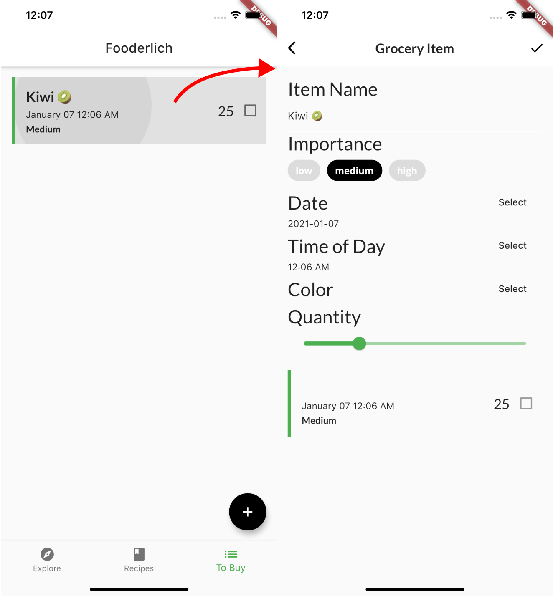
But this uses the imperative style of navigation, known as Navigator 1.0. In this chapter, you’ll learn to navigate between screens the declarative way.
You’ll cover the following topics:
- Overview of
Navigator1.0. - Overview of
Router API. - How to use go_router to handle routes and navigation.
By the end of this chapter, you’ll have everything you need to navigate to different screens!
Note: If you’d like to skip straight to the code, jump to Getting Started. If you’d like to learn the theory first, read on!
Introducing Navigation¶
If you come from an iOS background, you might be familiar with UINavigationController from UIKit, or NavigationStack from SwiftUI.
In Android, you use Jetpack Navigation to manage various fragments.
In Flutter, you use a Navigator widget to manage your screens or pages. Think of screens and pages as routes.
Note: This chapter uses these terms interchangeably because they all mean the same thing.
A stack is a data structure that manages pages. You insert the elements last-in, first-out (LIFO), and only the element at the top of the stack is visible to the user.
For example, when a user views a list of grocery items, tapping an item pushesGroceryItemScreen to the top of the stack. Once the user finishes making changes, you pop it off the stack.
Here’s a top-level and a side-level view of the navigation stack:
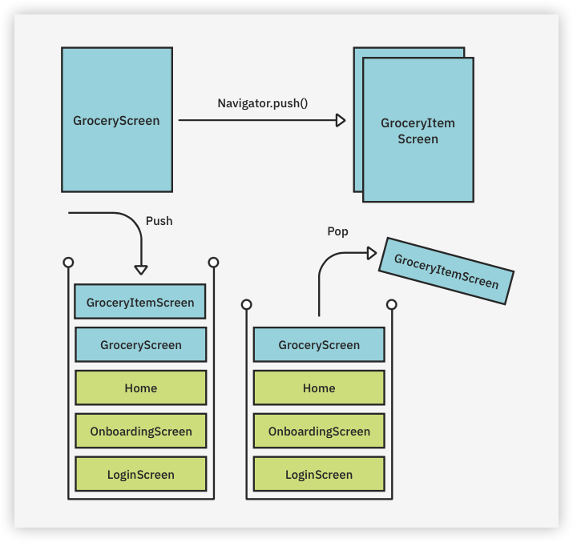
Now, it’s time for a quick overview of Navigator 1.0.
Navigator 1.0 Overview¶
Before Flutter 1.22, you could only shift between screens by issuing direct commands like “show this now” or “remove the current screen and go back to the previous one”. Navigator 1.0 provides a simple set of APIs to navigate between screens. The most common ones are:
push(): Adds a new route on the stack.pop(): Removes a route from the stack.
So, how do you add a navigator to your app?
Most Flutter apps start with WidgetsApp as the root widget.
Note: So far, you’ve used
MaterialApp, which extendsWidgetsApp.
WidgetsApp wraps many other common widgets that your app requires. Among these wrapped widgets are a top-level Navigator to manage the pages you push and pop.
Pushing and Popping Routes¶
To show the user another screen, you need to push a Route onto the Navigator stack using Navigator.push(context). Here’s an example:
bool result = await Navigator.push<bool>(
context,
MaterialPageRoute<bool>(
builder: (BuildContext context) => OnboardingScreen()
),
);
Here, MaterialPageRoute returns an instance of your new screen widget. Navigator returns the result of the push whenever the screen pops off the stack.
Here’s how you pop a route off the stack:
Navigator.pop(context);
This seems easy enough. So why not just use Navigator 1.0? Well, it has a few disadvantages.
Navigator 1.0’s Disadvantages¶
The imperative API may seem natural and easy to use, but, in practice, it’s hard to manage and scale.
There’s no good way to manage your pages without keeping a mental map of where you push and pop a screen.
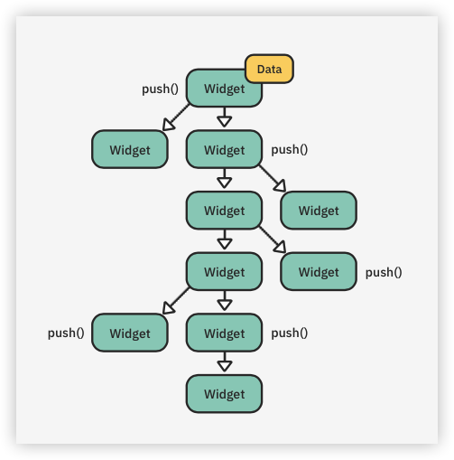
Imagine a new developer joins your team. Where do they even start? They’d surely be confused.
Moreover, Navigator 1.0 doesn’t expose the route stack to developers. It’s difficult to handle complicated cases, like adding and removing a screen between pages.
For example, in Fooderlich, you only want to show the Onboarding screen if the user hasn’t completed the onboarding yet. Handling that with Navigator 1.0 is complicated.
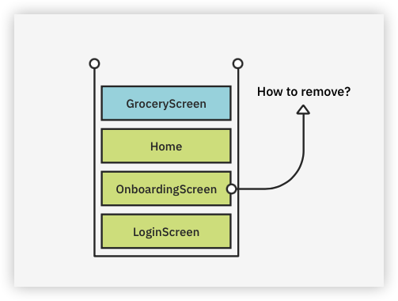
Another disadvantage is that Navigator 1.0 doesn’t update the web URL path. When you go to a new page, you only see the base URL, like this: www.localhost:8000/#/. Additionally, the web browser’s forward and backward buttons may not work as expected.
Finally, the Back button on Android devices might not work with Navigator 1.0 when you have nested navigators or add Flutter to your host Android app.
Wouldn’t it be great to have a declarative API that solves most of these pain points? That’s why Router API was designed!
To learn more about Navigator 1.0, check out the Flutter documentation.
Router API Overview¶
Flutter 1.22 introduced the Router API, a new declarative API that lets you control your navigation stack completely. Also known as Navigator 2.0, Router API aims to feel more Flutter-like while solving the pain points of Navigator 1.0. Its main goals include:
- Exposing the navigator’s page stack: You can now manipulate and manage your page routes. More power, more control!
- Backward compatibility with imperative API: You can use imperative and declarative styles in the same app.
- Handling operating system events: It works better with events like the Android and Web system’s Back button.
- Managing nested navigators: It gives you control over which navigator has priority.
- Managing navigation state: You can parse routes and handle web URLs and deep linking.
Here are the new abstractions that make up Router’s declarative API:
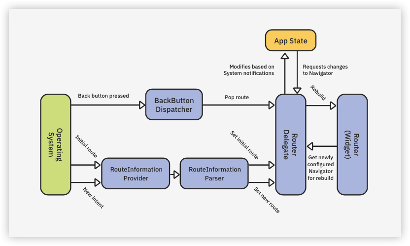
It includes the following key components:
- Page: An abstract class that describes the configuration for a route.
- Router: Handles configuring the list of pages the Navigator displays.
- RouterDelegate: Defines how the router listens for changes to the app state to rebuild the navigator’s configuration.
- RouteInformationProvider: Provides
RouteInformationto the router. Route information contains the location info and state object to configure your app. - RouteInformationParser: Parses route information into a user-defined data type.
- BackButtonDispatcher: Reports presses on the platform system’s Back button to the router.
- TransitionDelegate: Decides how pages transition into and out of the screen.
Note: This chapter will leverage a routing package, go_router, to make the Router API easier to use. If you want to know how to use the vanilla version of the Router API, check out the previous edition of this book.
Navigation and Unidirectional Data Flow¶
As discussed with Navigator 1.0, the imperative API is very basic. It forces you to place push()and pop() functions all over your widget hierarchy which couples all your widgets! To present another screen, you must place callbacks up the widget hierarchy.
With the new declarative API, you can manage your navigation state unidirectionally. The widgets are state-driven, as shown below:
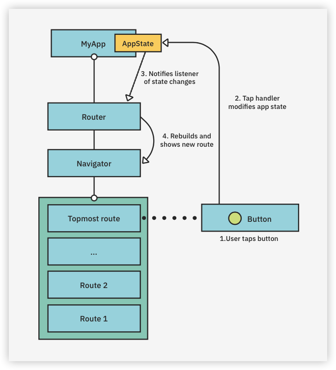
Here’s how it works:
- A user taps a button.
- The button handler tells the app state to update.
- The router is a listener of the state, so it receives a notification when the state changes.
- Based on the new state changes, the router reconfigures the list of pages for the navigator.
- The navigator detects if there’s a new page in the list and handles the transitions to show the page.
That’s it! Instead of having to build a mental mind map of how every screen presents and dismisses, the state drives which pages appear.
Is Declarative Always Better Than Imperative?¶
You don’t have to migrate or convert your existing code to use the new API if you have an existing project.
Here are some tips to help you decide which is more beneficial for you:
- For medium to large apps: Consider using a declarative API and a router widget when managing a lot of your navigation state.
- For small apps: The imperative API is suitable for rapid prototyping or creating a small app for demos. Sometimes push and pop are all you need!
Next, you’ll get some hands-on experience with declarative navigation.
Note: To learn more about Navigator 1.0, check:
Getting Started¶
Open the starter project in Android Studio. Run flutter pub get and then run the app.
Note: It’s better to start with the starter project rather than continuing with the project from the last chapter because it contains some changes specific to this chapter.
You’ll see that the Fooderlich app only shows a Login screen.
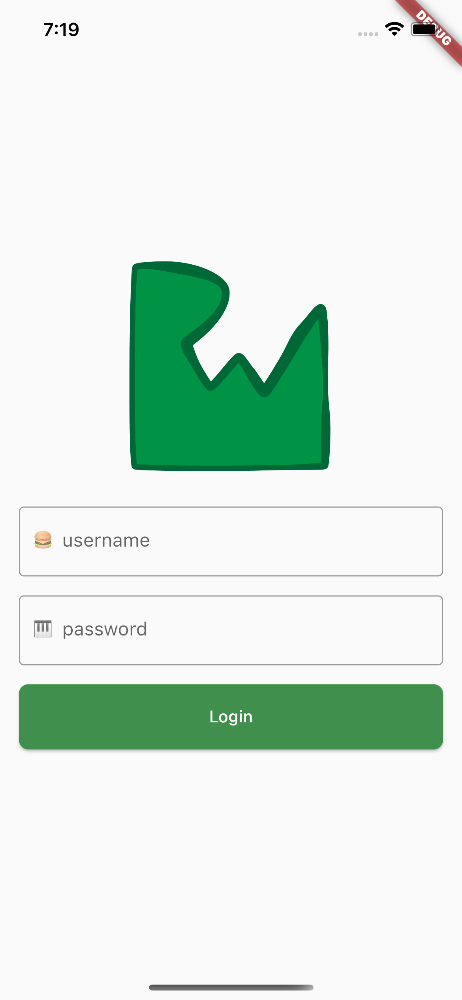
Don’t worry. You’ll connect all the screens soon.
You’ll build a simple flow that features a login screen and an onboarding widget before showing the existing tab-based app you’ve made so far. But first, take a look at some changes to the project files.
Changes to the Project Files¶
Before you dive into navigation, there are new files in this starter project to help you out.
In lib/main.dart, Fooderlich is now a StatefulWidget. It’ll listen to state changes and rebuild corresponding widgets accordingly.
Fooderlich now supports dark mode.
What’s New in the Screens Folder¶
There are five new changes in lib/screens/:
- login_screen.dart: Lets the user log in.
- onboarding_screen.dart: Guides the user through a series of steps to learn more about the app.
- profile_screen.dart: Lets users check their profile, update settings and log out.
- home.dart: Now includes a Profile button at the top-right for the user to view their profile.
- screens.dart: A barrel file that groups all the screens into a single import.
Later, you’ll use these to construct your authentication UI flow.
Changes to the Models Folder¶
There are a few changes to files in lib/models/.
tab_manager.dart has been removed. You’ll manage the user’s tab selection in app_state_manager.dart instead.
In addition, there are three new model objects:
- user.dart: Describes a single user and includes information like the user’s role, profile picture, full name and app settings.
- profile_manager.dart: Manages the user’s profile state by, for example, getting the user’s information, checking if the user is viewing their profile and setting dark mode.
- app_cache.dart: Helps to cache user info, such as the user login and onboarding statuses. It checks the cache to see if the user needs to log in or complete the onboarding process.
- app_state_manager.dart: Manages your app’s state. It depends on
AppCache. When the app callsinitializeApp(), it checks the app cache to update the appropriate state.
Note: These manager classes are using mock data. Developers typically make an API or network request to get user information.
Additional Assets¶
assets/ contains new images, which you’ll use to build the new onboarding guide.
New Packages¶
There are five new packages in pubspec.yaml:
smooth_page_indicator: ^1.0.0+2
webview_flutter: ^3.0.4
url_launcher: ^6.1.5
shared_preferences: ^2.0.15
go_router: ^4.3.0
Here’s what they do:
- smooth_page_indicator: Shows a page indicator when you scroll through pages.
- webview_flutter: Provides a
WebViewwidget to show web content on the iOS or Android platform. - url_launcher: A cross-platform library to help launch a URL.
- shared_preferences: Wraps platform-specific persistent storage for simple data.
AppCacheuses this package to store the user login and onboarding state. - go_router: A package built to reduce the complexity of the Router API. It helps developers easily implement declarative navigation.
Android SDK Version¶
Open android/app/build.gradle and you’ll notice that the minSdkVersion is now 19, as shown below:
android {
defaultConfig {
...
minSdkVersion 19
...
}
}
This is because webview_flutter depends on Android SDK 19 or higher to enable hybrid composition.
Note: For more information ,check out the webview_flutter documentation.
Now that you know what’s changed, it’s time for a quick overview of the UI flow you’ll build in this chapter.
Looking Over the UI Flow¶
Here are the first two screens you show the user:
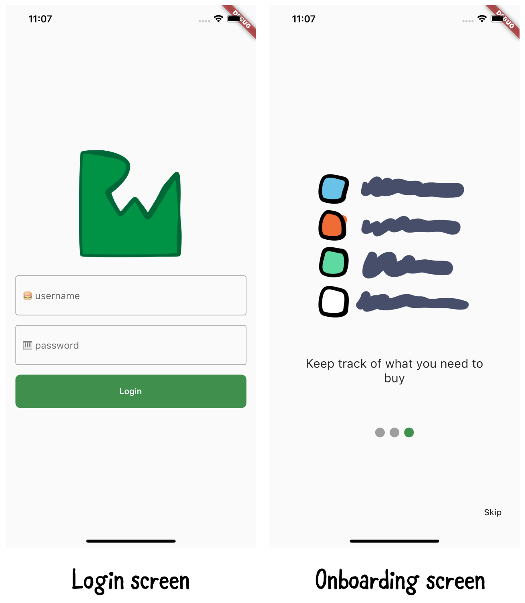
- When the user launches the app, the app is initialized and sets up any cached user state.
- Once initialized, the first screen the user sees is the Login screen. The user must now enter their username and password, then tap Login.
- When the user logs in, the app navigates to the Onboarding screen to learn more about the app. Users have two choices: swipe through a guide to learn more or skip.
From the Onboarding screen, the user goes to the app’s Home. They can now start using the app.
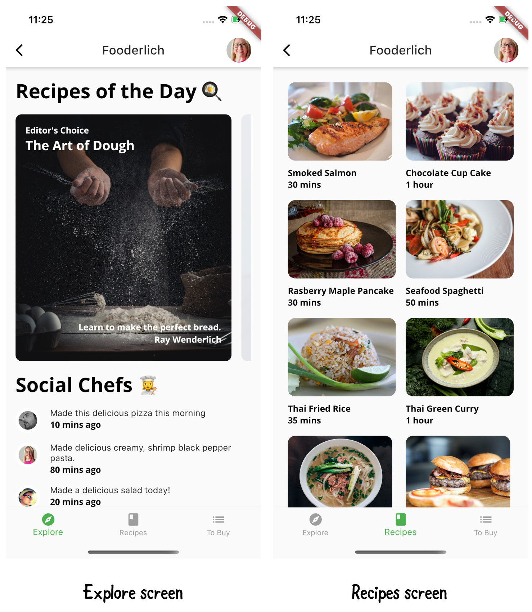
The app presents the user with three tabs with these options:
- Explore: View recipes for the day and see what their friends are cooking up.
- Recipes: Browse a collection of recipes they want to cook.
- To Buy: Add ingredients or items to their grocery list.
Next, the user can either tap the Add button or, if the grocery list isn’t empty, they can tap an existing item to see the Grocery Item screen:
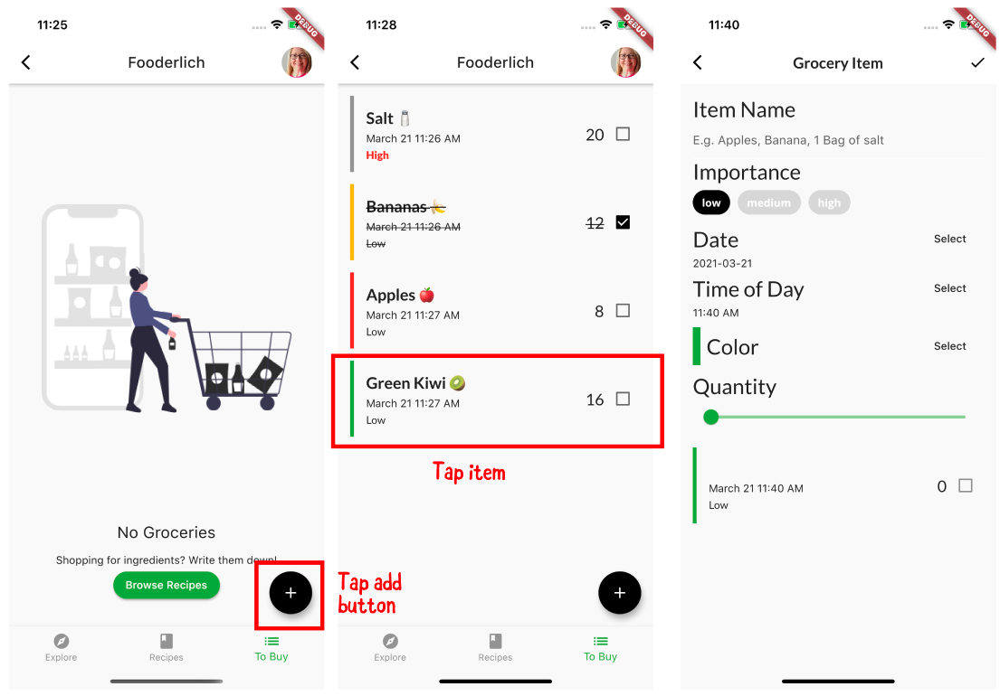
Now, how does the user view their profile or log out? They start by tapping the profile avatar:
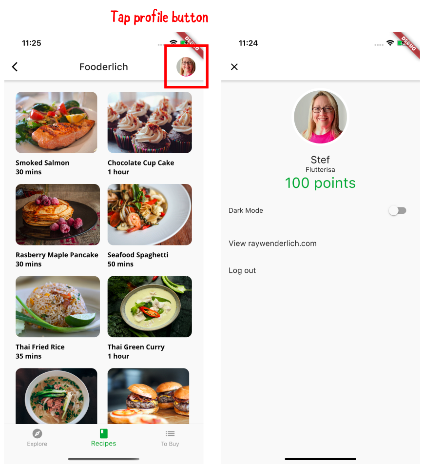
On the Profile screen, they can:
- View their profile and see how many points they’ve earned.
- Change the app theme to dark mode.
- Visit the raywenderlich.com website.
- Log out of the app.
Below you’ll see an example of a user toggling dark mode on and then opening raywenderlich.com.
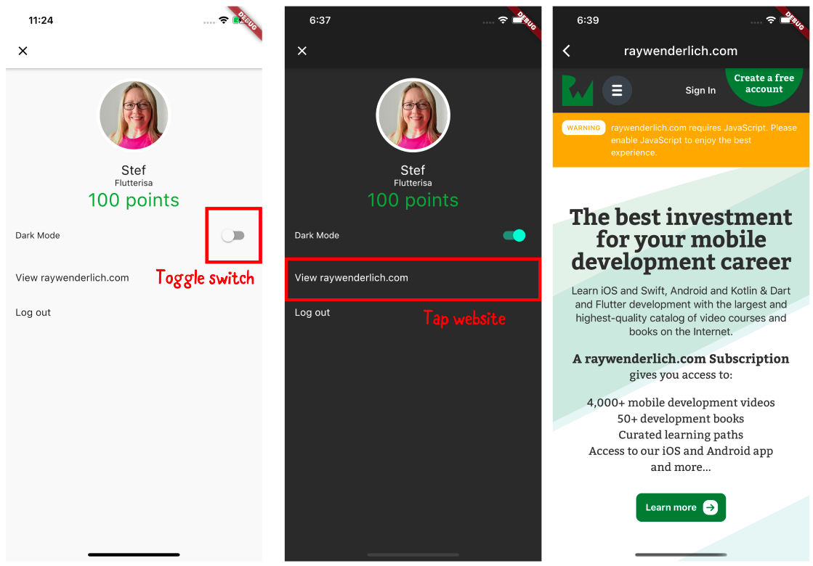
When the user taps Log out, the app reinitializes and goes to the Login screen, as shown below:
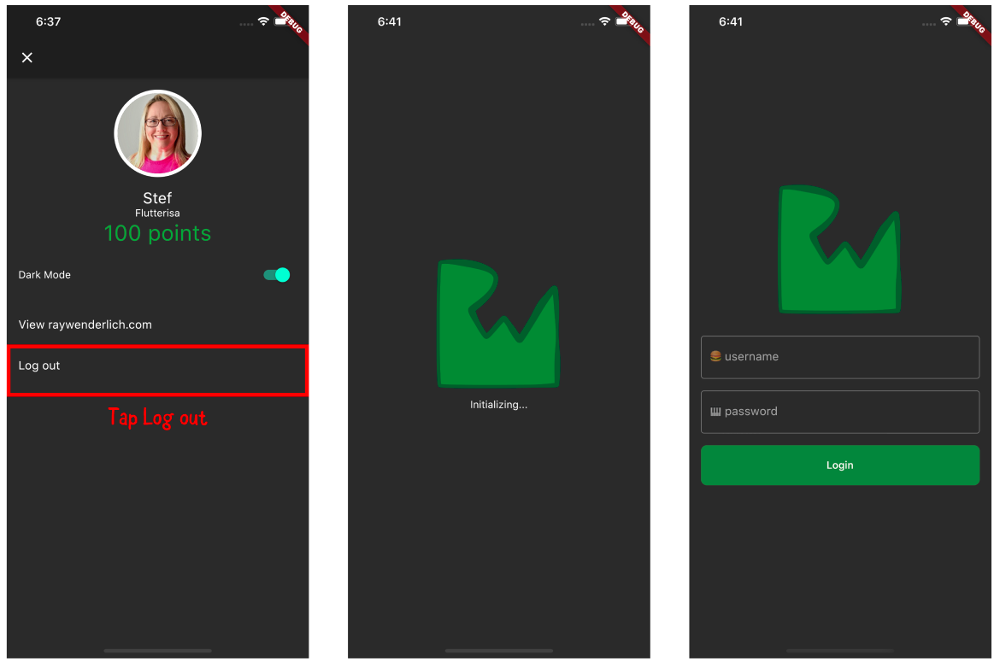
Here’s a bird’s eye view of the entire navigation hierarchy:
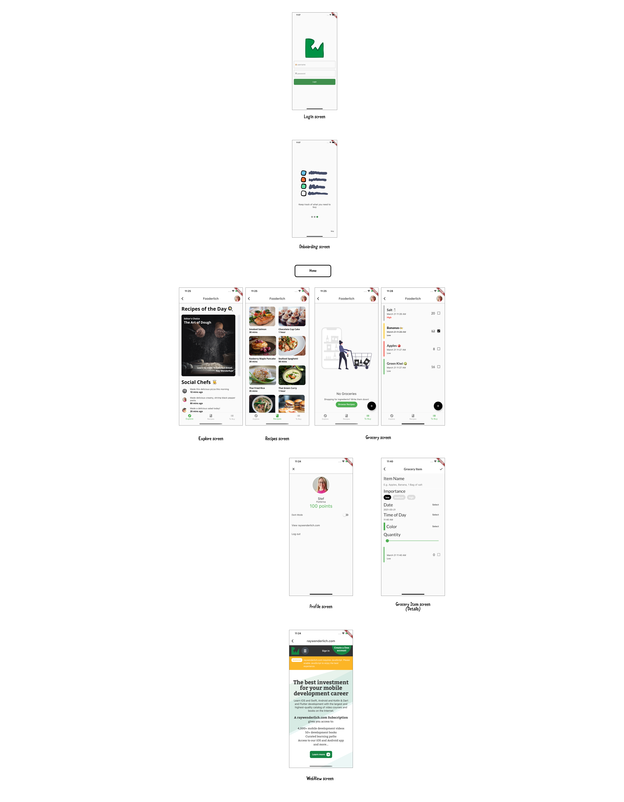
Note: This image’s large-scale version is in the assets folder of this chapter’s materials.
Your app is going to be awesome when it’s finished. Now it’s time to learn about go_router!
Introducing go_router¶
The Router API gives you more abstractions and control over your navigation stack. However, the API’s complexity and usability hindered the developer experience.
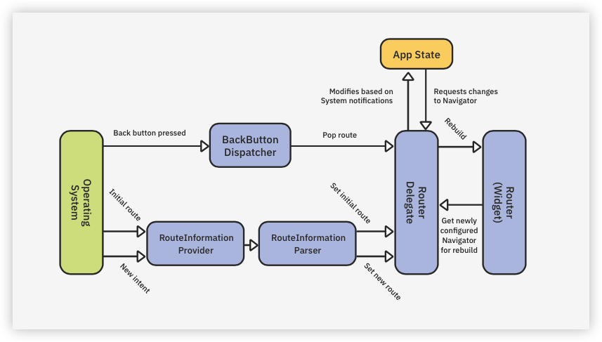
For example, you must create your RouterDelegate, bundle your app state logic with your navigator and configure when to show each route.
To support the web platform or handle deep links, you must implement RouteInformationParser to parse route information.
Eventually, developers and even Google realized the same thing: creating these components wasn’t straightforward. As a result, developers wrote other routing packages to make the process easier.
Interesting Read: Google’s Flutter team came out with a research paper evaluating different routing packages. You can check it out here.
Of the many packages available, you’ll focus on GoRouter. The GoRouter package, founded by Chris Sells, is now fully maintained by the Flutter team. GoRouter aims to make it easier for developers to handle routing, letting them focus on building the best app they can.
In this chapter you’ll focus on how to:
- Create routes.
- Handle errors.
- Redirect to another route.
Time to code!
Creating the go_router¶
Under lib/, create a new directory called navigation. Within that folder, create a new file called app_router.dart. Add:
import 'package:flutter/material.dart';
import 'package:go_router/go_router.dart';
import '../models/models.dart';
import '../screens/screens.dart';
class AppRouter {
// 1
final AppStateManager appStateManager;
// 2
final ProfileManager profileManager;
// 3
final GroceryManager groceryManager;
AppRouter(
this.appStateManager,
this.profileManager,
this.groceryManager,
);
// 4
late final router = GoRouter(
// 5
debugLogDiagnostics: true,
// 6
refreshListenable: appStateManager,
// 7
initialLocation: '/login',
// 8
routes: [
// TODO: Add Login Route
// TODO: Add Onboarding Route
// TODO: Add Home Route
],
// TODO: Add Error Handler
// TODO: Add Redirect Handler
);
}
AppRouter is just a wrapper around GoRouter that keeps your navigation code in one place. Here’s how the code works:
- Declares
AppStateManager.GoRouterwill listen to app state changes to handle errors or redirects. - Declares
ProfileManagerto get the user’s profile. - Declares
GroceryManagerto manage when the user creates or edits a grocery item. - Creates a variable that holds a
GoRouterinstance. - Enables debugging. This is especially useful to see what path your user is going to and detect any problems with your routes.
- Sets your router to listen for app state changes. When the state changes, your router will trigger a rebuild of your routes.
- Sets the initial location for routing.
- Defines all the routes you use. You’ll add them later.
Note: You should remove the
debugLogDiagnosticsflag before you ship your app.
Congratulations, you just created your app router! Now it’s time to apply it to your app.
Using Your App Router¶
The newly created router needs to know who the managers are. So, now you’ll connect it to the state, grocery and profile managers.
Open main.dart and locate // TODO: Import app_router. Replace it with:
import 'navigation/app_router.dart';
Next, locate // TODO: Initialize AppRouter and replace it with:
late final _appRouter = AppRouter(
widget.appStateManager,
_profileManager,
_groceryManager,
);
You’ve now initialized your app router.
Next, locate // TODO: Replace with Router. Replace it and the entire return MaterialApp(); code with:
final router = _appRouter.router;
return MaterialApp.router(
theme: theme,
title: 'Fooderlich',
routerDelegate: router.routerDelegate,
routeInformationParser: router.routeInformationParser,
routeInformationProvider: router.routeInformationProvider,
);
GoRouter provides routerDelegate, routeInformationParser and routeInformationProvider to the material app’s router. You don’t have to create any of these components yourself.
Next, remove the following unused import statement:
import 'screens/screens.dart';
Your router is all set!
Adding Screens¶
With all the infrastructure in place, it’s time to define which screen to display according to the route. But first, check out the current situation.
Build and run on iOS. You’ll notice an error screen exception:
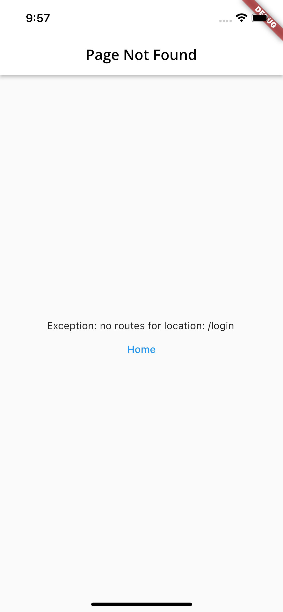
If the route isn’t found, GoRouter provides a Page Not Found screen by default. That’s because you haven’t defined any routes yet! You’ll fix that by adding routes next.
Setting Up Your Error Handler¶
You can customize GoRouter to show your own error page. It’s common for users to enter the wrong url path, especially with web apps. Web apps usually show a 404 error screen.
Open lib/navigation/app_router.dart, locate // TODO: Add Error Handler and replace it with:
errorPageBuilder: (context, state) {
return MaterialPage(
key: state.pageKey,
child: Scaffold(
body: Center(
child: Text(
state.error.toString(),
),
),
),
);
},
Here you simply show your error page and the error exception.
Trigger a hot restart. Your custom error page now displays.
Next, you’ll start working on your login screen.
Adding the Login Route¶
You’ll start by displaying the Login screen.
Still in lib/navigation/app_router.dart, locate // TODO: Add Login Route and replace it with:
GoRoute(
name: 'login',
path: '/login',
builder: (context, state) => const LoginScreen(),
),
Here’s how you define a route:
namenames the route. If set, you must provide a unique string name; this can’t be empty.pathis this route’s path.builderis this route’s page builder. It’s responsible for building your screen widget.
Trigger a hot restart. You’ll see the Login screen:
You just added your first route! Finally, you need to handle changes to the login state.
Open lib/screens/login_screen.dart and add the following imports:
import 'package:provider/provider.dart';
import '../models/models.dart';
Locate // TODO: Initiate Login and replace it with:
Provider.of<AppStateManager>(context, listen: false)
.login('mockUsername', 'mockPassword');
This code uses AppStateManager to call a function that updates the user’s login status. What happens when the login state changes? Glad you asked! That’s the next step. :]
Adding the Onboarding Route¶
You’ll show the Onboarding screen when the user is logged in.
Open lib/navigation/app_router.dart, locate // TODO: Add Onboarding Route and replace it with:
GoRoute(
name: 'onboarding',
path: '/onboarding',
builder: (context, state) => const OnboardingScreen(),
),
Here, you configure another route to navigate to the Onboarding screen widget.
Trigger a hot restart and tap the login button. You’ll see that nothing happens. Don’t worry. You’ll fix that next. :]
Debugging the Issue¶
Simply defining a route doesn’t mean GoRouter will navigate to the onboarding screen. There are two options:
- You can implement redirection with
GoRouter. - You can push or go to the onboarding route by calling
context.go('/onboarding);.
Which option is better?
Answer: Option one is better because
GoRouteralready listens to the app state. Based on the state changes, the redirect will be triggered to direct to the correct location. If you go with option two, you still have to check whether the user has logged in within the onboarding screen. As mentioned before, this is the imperative approach. You shouldn’t need to couple your login state information within the onboarding screen.
Handling Redirects¶
You redirect when you want your app to redirect to a different location. GoRouter lets you do this with its redirect handler.
Most apps require some type of login authentication flow, and redirect is perfect for this situation. For example, some of these scenarios may happen to your app:
- The user logs out of the app.
- The user tries to go to a restricted page that requires them to log in.
- The user’s session token expires. In this case, they’re automatically logged out.
It would be nice to redirect the user back to the login screen in all these cases.
In lib/navigation/app_router.dart, locate // TODO: Add Redirect Handler and replace it with:
redirect: (state) {
// 1
final loggedIn = appStateManager.isLoggedIn;
// 2
final loggingIn = state.subloc == '/login';
// 3
if (!loggedIn) return loggingIn ? null : '/login';
// 4
final isOnboardingComplete = appStateManager.isOnboardingComplete;
// 5
final onboarding = state.subloc == '/onboarding';
// 6
if (!isOnboardingComplete) {
return onboarding ? null : '/onboarding';
}
// 7
if (loggingIn || onboarding) return '/${FooderlichTab.explore}';
// 8
return null;
},
Here’s how the redirection works:
- Checks to see if the user is logged in.
- Checks to see if the user is at the login location.
- Redirects the user to log in if they haven’t yet.
- Since the user is already signed in, now you check to see if they’ve completed the onboarding guide.
- Checks to see if the user is at the onboarding location.
- Redirects the user to onboarding if they haven’t completed it yet.
- The user has signed in and completed onboarding. You redirect them to the home page, specifically the explore tab. You’ll add the home route in a bit.
- Returns
nullto stop redirecting.
Perform a hot restart.
If you’re logged in, you’ll see the Onboarding screen. If you’re not logged in, you’ll see the Login screen and need to tap Login to see the Onboarding screen:
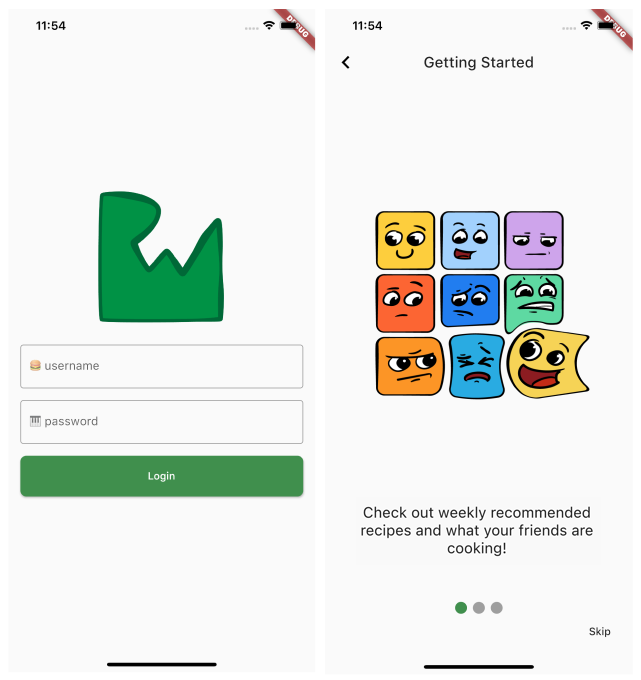
Perform another hot restart and notice it redirects to the Onboarding screen since the user is already logged in.
Handling the Skip Button in Onboarding¶
You’ll show the home screen when the user taps the Skip button rather than going through the onboarding guide.
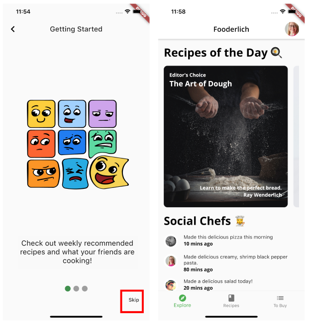
Open lib/screens/onboarding_screen.dart and add the following imports:
import 'package:provider/provider.dart';
import '../models/models.dart';
Next, locate // TODO: Initiate onboarding and replace it with:
Provider.of<AppStateManager>(context, listen: false).onboarded();
Now you need to add the home route, so GoRouter knows to redirect there.
Transitioning From Onboarding to Home¶
Return to lib/navigation/app_router.dart. Locate // TODO: Add Home Route and replace it with:
GoRoute(
name: 'home',
// 1
path: '/:tab',
builder: (context, state) {
// 2
final tab = int.tryParse(state.params['tab'] ?? '') ?? 0;
// 3
return Home(
key: state.pageKey, currentTab: tab,
);
},
// 3
routes: [
// TODO: Add Item Subroute
// TODO: Add Profile Subroute
],
),
In the code above, you define a new route named home. This route is special because it uses parameters. The home path consists of a tab parameter that will go to the Explore, Recipes or To Buy tabs.
Here’s how the code works:
- Defines a path with the
tabparameter. The notion is a colon followed by the parameter name. - Gets the tab’s value from the
GoRouterStateparams and converts it into an integer. - Passes the tab to the
Homewidget. - Within
GoRoute, you can have sub-routes. You’ll add to this later.
Note: If you’re interested in the other properties
GoRouterStateprovides, check out the documentation.
Perform a hot restart.
Note: Stop the app if the Onboarding screen doesn’t display. Then delete it from the device, re-run it and tap Skip on the Onboarding screen.
The app now redirects to the home screen.
Handling Tab Selection¶
Open lib/screens/home.dart and add the following imports:
import 'package:provider/provider.dart';
import '../models/models.dart';
import 'package:go_router/go_router.dart';
Next, locate // TODO: Update user’s selected tab and replace it with:
// 1
Provider.of<AppStateManager>(context, listen: false).goToTab(index);
// 2
context.goNamed(
'home',
params: {
'tab': '$index',
},
);
Here’s how the code works:
- Updates the current tab the user selected.
- Uses
GoRouterto navigate to the selected tab.
Perform a hot restart. Now you can switch to different tabs.
Note: There are two ways to navigate to different routes:
context.go(path)context.goNamed(name)You should use
goNamedinstead ofgoas it’s error-prone, and the actual URI format can change over time.goNamedperforms a case-insensitive lookup by using thenameparameter you set with eachGoRoute.goNamedalso helps you pass in parameters and query parameters to your route.
Handling the Browse Recipes Button¶
Now, you want to make tapping Browse Recipes bring the user to the Recipes tab.
Open lib/screens/empty_grocery_screen.dart add the following imports:
import 'package:go_router/go_router.dart';
import '../models/models.dart';
Next, locate // TODO: Go to recipes and replace it with:
context.goNamed(
'home',
params: {
'tab': '${FooderlichTab.recipes}',
},
);
Here, you specify that tapping Browse Recipes should route to the Recipes tab.
To test it, tap the To Buy tab in the bottom navigation bar and Browse Recipes. Notice that the app goes to the Recipes tab, as shown below:
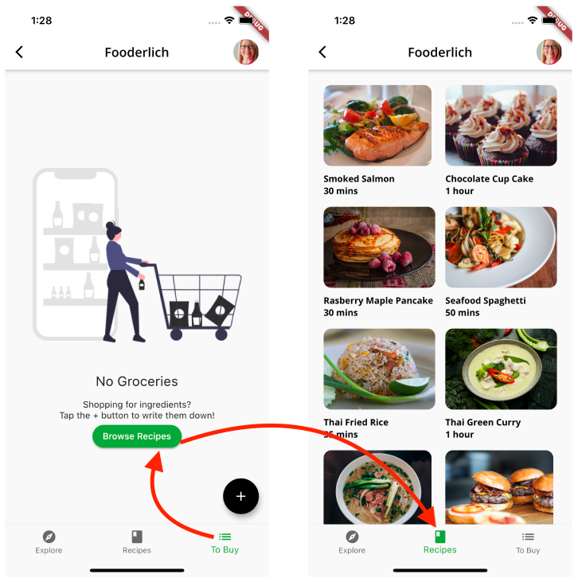
Showing the Grocery Item Screen¶
Next, you’ll connect the Grocery Item screen.
Return to app_router.dart. Locate // TODO: Add Item Subroute` and replace it with:
GoRoute(
name: 'item',
// 1
path: 'item/:id',
builder: (context, state) {
// 2
final itemId = state.params['id'] ?? '';
// 3
final item = groceryManager.getGroceryItem(itemId);
// 4
return GroceryItemScreen(
originalItem: item,
onCreate: (item) {
// 5
groceryManager.addItem(item);
},
onUpdate: (item) {
// 6
groceryManager.updateItem(item);
},
);
},
),
item is a subroute of the home route. Here’s how the item route works:
- Defines a subroute
itemwithidas a parameter. - Within the builder, it attempts to extract the
itemId. - Gets the
GroceryItemobject for theitemId. - Returns the
GroceryItemScreenand passes in the item. Note that if the item is null, the user is creating a new item. - If the user creates a new item, it adds the new item to the grocery list.
- If the user updates an item, it updates the item in the grocery list.
Next, you’ll implement the Grocery Item screen. There are two ways to show it:
- The user taps the + button to create a new grocery item.
- The user taps an existing grocery item to edit it.
You’ll enable these features next.
Creating a New Grocery Item¶
Open lib/screens/grocery_screen.dart and add the following import:
import 'package:go_router/go_router.dart';
Next, locate // TODO: Create New Item. Replace it with:
context.goNamed(
'item',
params: {
'tab': '${FooderlichTab.toBuy}',
'id': 'new'
},
);
You use GoRouter to navigate a new grocery item screen. Notice the id has a value of new.
With your app running, perform a hot restart. Now you can create a new grocery item, as shown below. Or can you?
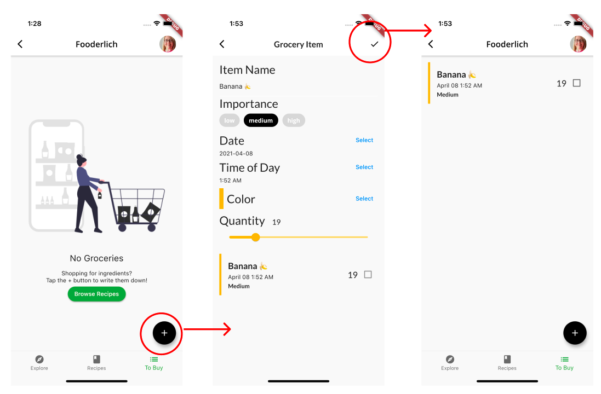
After the user creates an item, they need to press the checkmark button on the top right to save the item. You’ll add that next so that, after saving the item, the app navigates back to the To Buy tab.
Navigating Back Home¶
Open grocery_item_screen.dart and add the following import:
import 'package:go_router/go_router.dart';
Next, locate // TODO: Navigate to home:ToBuy and replace it with:
context.goNamed(
'home',
params: {
'tab': '${FooderlichTab.toBuy}',
},
);
This code navigates the user back and automatically goes to the To Buy tab.
Editing an Existing Grocery Item¶
Open grocery_list_screen.dart and add the following import:
import 'package:go_router/go_router.dart';
Next, locate // TODO: Navigate to grocery item and replace it with:
// 1
final itemId = manager.getItemId(index);
// 2
context.goNamed(
'item',
params: {
'tab': '${FooderlichTab.toBuy}',
'id': itemId
},
);
Here’s how the code works:
- Grabs the
itemIdfor that index when the user taps a specific index in the grocery list. - Navigates from home’s
To Buytab to a specific item, specifying anitemId.
Now, tap a grocery item (or create a new one), edit it and save it!
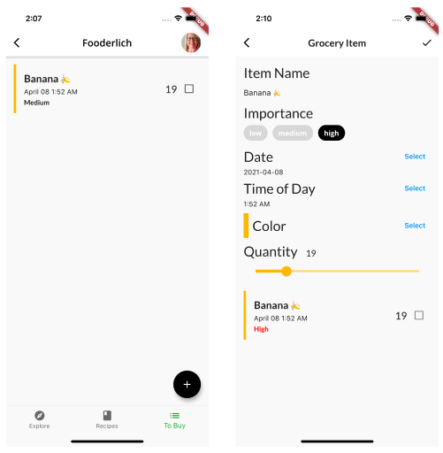
Navigating to the Profile Screen¶
Next, you need to set up the profile route. Back in app_router.dart, locate // TODO: Add Profile Subroute and replace it with:
GoRoute(
name: 'profile',
// 1
path: 'profile',
builder: (context, state) {
// 2
final tab = int.tryParse(state.params['tab'] ?? '') ?? 0;
// 3
return ProfileScreen(
user: profileManager.getUser,
currentTab: tab,
);
},
// 4
routes: [
// TODO: Add Webview subroute
],
),
profile is a subroute of the home route. Here’s how it works:
- Defines a subroute
profile. - Gets the tab the user is currently on.
- Returns the
ProfileScreen, passing the user profile and the tab the user was last on. - You’ll set up more subroutes later.
Next, open home.dart. Locate // TODO: Navigate to profile screen and replace it with:
context.goNamed(
'profile',
params: {
'tab': '$currentTab',
},
);
You use GoRouter to navigate to the profile screen from a specific tab.
Perform a hot restart and tap the user’s avatar. Now it presents the Profile screen:
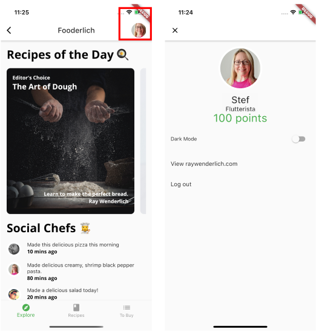
Navigating to raywenderlich.com¶
In the Profile screen, you can:
- Change the dark mode setting.
- Visit raywenderlich.com.
- Log out.
Next, you’ll handle the WebView screen so you can visit the website.
Create WebView Subroute.¶
Return to app_router.dart. Locate // TODO: Add Webview Subroute and replace it with:
GoRoute(
name: 'rw',
path: 'rw',
builder: (context, state) => const WebViewScreen(),
),
You created a subroute from route profile.
Transitioning From Profile to WebView¶
Open lib/screens/profile_screen.dart and add the following import:
import 'package:go_router/go_router.dart';
Next, locate // TODO: Navigate to WebView and replace it with:
context.goNamed(
'rw',
params: {'tab': '${widget.currentTab}'},
);
Hot reload and go to the Profile screen. Now, tap View raywenderlich.com, and you’ll see it present in a web view, as shown below:
Next, you’ll work on the log out functionality.
Logging Out¶
Still in profile_screen.dart, locate // TODO: Logout user. Replace it with:
Provider.of<AppStateManager>(context, listen: false).logout();
Here you call logout(), which resets the entire app state and redirects you back to the login screen.
Save your changes. Now, tap Log out from the Profile screen. You’ll notice it goes back to the Login screen, as shown below:

Congratulations, you’ve now completed the entire UI navigation flow.
Key Points¶
- Navigator 1.0 is useful for quick and simple prototypes, presenting alerts and dialogs.
- Router API is useful when you need more control and organization when managing the navigation stack.
GoRouteris a wrapper around the Router API that makes it easier for developers to use.- With
GoRouter, you navigate to other routes usinggoNamedinstead ofgo. - Use a router widget to listen to navigation state changes and configure your navigator’s list of pages.
- If you need to navigate to another page after some state change, handle that in
GoRouter’s redirect handler. - You can customize your own error page by implementing the
errorPageBuilder.
Where to Go From Here?¶
You’ve now learned how to navigate between screens the declarative way. Instead of calling push() and pop() in different widgets, you use multiple state managers to manage your state.
You also learned to create a GoRouter widget, which encapsulates and configures all the page routes for a navigator. Now, you can easily manage your navigation flow in a single router object!
To learn about navigation in Flutter, here are some recommendations for high-level theory and walk-throughs:
- To understand the motivation behind Navigator 2.0, check out the design document.
- Watch this presentation by Chun-Heng Tai, who contributed to the declarative API: Navigator 2.0.
- In this video, Simon Lightfoot walks you through a Navigator 2.0 example.
- Flutter Navigation 2.0 by Dominik Roszkowski goes through the differences between Navigator 1.0 and 2.0, including a video example.
- For in-depth knowledge about Navigator, check out Flutter’s documentation.
- GoRouter developer documentation.
- GoRouter navigation examples.
Other Libraries to Check Out¶
GoRouter is just one of the many libraries trying to make the RouterAPI easier to use. Check them out here:
There are so many more things you can do with Router API. In the next chapter, you’ll look at supporting web URLs and deep linking!